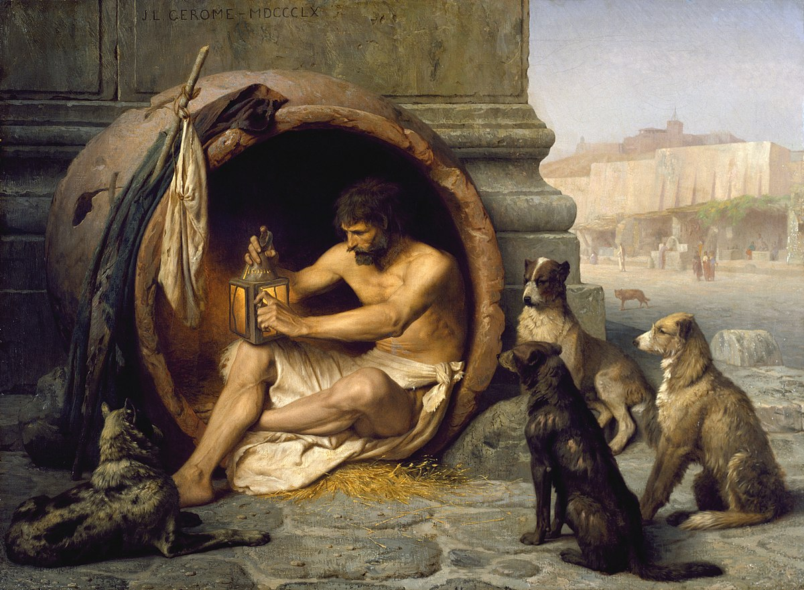

Диоген
Диоге́н Сино́пский (др.-греч. Διογένης ὁ Σινωπεύς; около 412 до н. э., Синоп — 10 июня 323 до н. э., Коринф) — древнегреческий философ.В молодости Диоген получил пророчество от дельфийской пифии «переоценивать ценности», которое вначале принял буквально и стал фальшивомонетчиком. После того, как его уличили в преступлении, был вынужден бежать из родного города. Диоген прибыл в Афины и стал учеником основателя школы киников Антисфена. Вскоре стал знаменитым благодаря своей мудрости, стилю жизни и эпатажным выходкам. В своём учении Диоген пропагандировал аскетизм — отказ от земных благ, независимость и самодостаточность. Чувство зависимости от внешних обстоятельств, согласно Диогену, было уделом раба. Он отрёкся лишь от тех потребностей, удовлетворение которых требовало компромисса, отказа от свободной жизни. Даже в рабстве, имея внутреннюю свободу, можно оставаться независимым человеком. Одновременно с аскетизмом Диоген отвергал понятия брака, отечества, первым введя в обиход слово «космополит», презирал условности. Его шокирующие действия не только привлекали внимание, но и стали своего рода аргументом в споре, которому «серьёзная наука» ничего не может противопоставить. Образ народного героя и фольклорного мудреца Диогена привёл к появлению множества историй и преданий, и соответственно противоречий и домыслов в источниках. К наиболее известным легендам о Диогене относятся встреча с Александром Македонским и поиск человека с фонарём. Когда царь предложил философу выполнить любое желание, тот попросил его отойти в сторону, так как Александр заслонял солнце. В другой раз Диоген зажёг днём фонарь и стал ходить по улицам. На вопрос относительно того, что он делает, философ отвечал: «Ищу человека».
Источники
Диоген стал человеком-легендой ещё в древности. Многовековая традиция приписывала его имени анекдоты, апофтегмы (наставительные изречения), меткие слова и побасёнки. Образ народного героя и фольклорного мудреца Диогена привёл к появлению множества противоречий и домыслов в источниках. Так, например, антиковеды насчитывают пять версий его смерти. В «жизнеописании Диогена» Диогена Лаэртского (180—240 годы н. э.) смешаны легендарные и исторические данные. Дион Хрисостом (40—120 годы н. э.) в серии так называемых «диогеновских речей» представляет античного философа идеальным киником. Максим Тирский (II век н. э.), Эпиктет (50—138 годы н. э.) и Юлиан (331—363 годы н. э.) описывали свои варианты жизни Диогена
Биография

Диоген родился в богатом греческом городе Синопе на побережье Чёрного моря. Его отец Гикесий был менялой. Согласно античным источникам, Диоген вместе с отцом занимался фальшивомонетничеством. После того как их уличили, Диоген был вынужден бежать из родного города. По другой легенде во время посещения Дельф пифия посоветовала молодому Диогену «переоценивать ценности» (др.-греч. παραχάραττειν τὸ νόµισµα), что он вначале понял буквально начав перечеканивать монету. Позже он осознал, что речь шла не о материальных, а о духовных ценностях. Изгнанный или сбежавший из Синопа Диоген прибыл в Афины вместе с рабом по имени Манес, который вскоре самовольно покинул хозяина. С этим Манесом связана легенда. На уговоры начать розыски беглого раба Диоген ответил: «Позорно, что Манес без Диогена может жить, а Диоген без Манеса не может». Предположительно приезд в Афины произошёл в промежутке между 390 и 385 годами до н. э. В Афинах примкнул к основателю философской школы кинизма Антисфену. Согласно легенде философ вначале отказался обучать Диогена, однако тот своим упорством добился своего. Когда Антисфен замахнулся на Диогена палкой, тот сказал: «Бей, но ты не найдёшь такой крепкой палки, чтобы прогнать меня, пока ты что-нибудь не скажешь». Своим аскетизмом и эксцентричностью он превзошёл всех остальных философов Древней Греции. В Афинах он получил прозвище «собаки» (др.-греч. ϰύων). В этом эпитете одновременно присутствовали как презрительный, осуждающий оттенок связанный с бесстыдством, назойливостью, наглостью и бродяжничеством, так и предмет гордости кинических философов — верность, близость к природе, открытость. В течение жизни Диоген встречался со многими великими людьми того времени — Платоном, Аристиппом, Демосфеном, Александром Македонским, Евклидом и др. Детали этих встреч, в которых нищий мудрец высмеивает богатство и власть, носят легендарный характер. Эти истории импонировали бедному простому народу, в связи с чем стали популярными и сохранились до наших дней. Гравюра 1688 года Ольферта Даппера[en] с реконструкцией могилы Диогена После долгого пребывания в Афинах Диоген начал странствовать по Греции. Во время одной из поездок его захватили пираты и продали в рабство коринфянину Ксениаду, который поставил его наставником своих детей. Новому хозяину Диоген заявил, что тот должен его слушаться так же, как и врача или кормчего, если бы те были рабами. Детей Ксениада он обучал литературе, истории, умению ездить верхом и владению оружием. Дети полюбили своего наставника и заступались за него перед родителями. Когда они выросли, то оставили жить в доме. После смерти философа они устроили похороны своему бывшему наставнику. Обстоятельства смерти философа столь противоречивы в античных источниках (отравился сырым осьминогом; заболел холерой; задержал дыхание и умер от удушья; искусан собаками; дошёл до реки Илисос, упал и попросил рядом находящегося сторожа после смерти сбросить его тело в воду), что у антиковедов возникают сомнения относительно их достоверности. Как бы то ни было, Диогена похоронили в Коринфе у Истмийских ворот. На его могиле поставили мраморную колонну с фигурой собаки. Диоген Лаэртский передаёт текст эпитафии на месте погребения Диогена